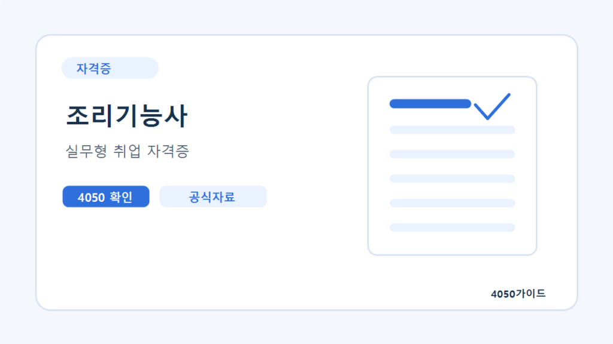

한식조리기능사 합격 후에는 조리사 면허와 지원서류부터 구분하세요
한식조리기능사에 합격했다면 같은 시험 대비반을 다시 찾기 전에 채용공고가 자격증과 조리사 면허 중 무엇을 요구하는지 확인하세요. 국가기술자격 취득과 면허 발급은 별개이며, 면허를 준비해도 별도의 실무경력 요건이 자동으로 충족되지는 않습니다.
자격 취득과 조리사 면허 신청은 다른 절차입니다
정부24의 「조리사면허증 (재)발급」 안내는 해당 분야 국가기술자격을 얻은 뒤 시장·군수·구청장에게 면허를 신청하는 민원으로 설명합니다. 인터넷·방문·우편 신청이 안내되어 있으며 온라인 대리 신청은 불가합니다. 조리사 면허를 요구하는 채용에 자격증만 제출해도 된다고 임의로 판단하지 마세요.
신규 발급 안내에는 신청서, 사진, 안내된 요건을 확인하는 의사의 진단서가 제시됩니다. 국가기술자격증은 행정정보 공동이용으로 확인할 수 있으며 동의하지 않으면 제출해야 합니다. 필요한 진단서 문구와 사진 조건은 접수기관 안내로 대조하고, 흔히 보건증이라 부르는 건강진단결과서가 같은 서류라고 가정하지 않습니다. 이 글은 개인별 면허 발급 가능 여부를 판정하지 않습니다.
| 서류·경험 | 확인하는 내용 | 대신할 수 없는 것 |
|---|---|---|
| 한식조리기능사 자격증 | 해당 국가기술자격 취득 | 조리사 면허 발급 자체 |
| 조리사 면허증 | 별도 면허 신청·발급 결과 | 사업장 근무경력 증명 |
| 교육 수료·실습 기록 | 배운 과정과 수행한 연습 | 실제 고객·급식 조리 경력 |
| 채용 시 요구 건강 관련 서류 | 공고가 정한 제출 요건 | 다른 민원의 진단서 요건 자동 충족 |
시험에서 확인한 기술과 입사 후 맡을 공정을 연결하세요
Q-Net은 한식 실기를 지급 재료로 요구 과제를 제한시간 안에 만들고 위생·안전관리, 조리기술, 작품완성도 등을 평가하는 작업으로 설명합니다. 이것이 대량 조리, 식재료 입고 관리, 배식 일정 운영을 모두 경험했다는 뜻은 아닙니다. 공고가 요구하는 일을 나란히 놓고 「시험·교육에서 수행」과 「현장 경험 없음」으로 구분하세요.
확인한 고용24의 한 조리사 공고는 메뉴 조리와 식재료 관리를 적으면서 별도의 경력 요건도 제시합니다. 자격 관련 문구가 있어도 경력 조건은 남는다는 사례입니다. 특정 공고의 채용 진행 여부나 자격 표현을 전체 업계 기준으로 일반화하지 않습니다.
자격을 더 따기 전에 부족한 조건이 무엇인지 결정하세요
가상 지원자에게 한식 자격과 면허는 있지만 사업장 경력이 없다고 가정하겠습니다. 목표 A가 자격·면허와 별도 경력을 필수로 요구하면 다른 조리 자격 하나를 추가해도 경력 공백은 그대로입니다. 목표 B가 해당 자격을 요구하고 경력무관이라면 제출서류를 갖추고 직무 적합성을 설명하는 준비가 우선일 수 있습니다. 이는 실제 채용 결과 예측이 아닌 조건 대조 예시입니다.
보강 과정이 필요하다면 고용24의 「직업능력개발→훈련 찾기·신청→훈련 통합검색」에서 관련 과정을 열고 교과내용을 보세요. 시험 과제 반복인지, 목표 공고에서 부족한 공정을 배우는지 구분해야 합니다. 과정 수료가 현장 경력이나 추가 자격 취득을 대신하는지 여부는 별도로 확인해야 합니다.
이력서에는 해본 작업만 구체적으로 적습니다
자격 항목에는 정확한 종목명과 취득 사실을, 교육 항목에는 과정명과 실제 수행한 실습을 적으세요. 시험 연습 사진은 교육용 결과물이라고 밝히고 대량 급식 운영이나 유급 조리 경력처럼 표시하지 않습니다. 조리사 면허 취득도 식당 창업의 모든 신고·교육을 끝냈다는 의미는 아니므로 취업 준비와 창업 인허가는 나눠 검토해야 합니다.
공식 시험료와 교육비를 구분합니다
2026년 10월 30일 Q-Net 해당 종목 시험정보에서 확인한 수험료는 필기 14,500원, 실기 26,900원입니다. 교재·수강료·실습 재료·공구·통학비를 포함하는 금액이 아닙니다. 학원 견적에 접수비가 포함되어 있다면 같은 비용을 다시 더하지 말고, 재응시할 때 필요한 비용은 별도로 적으세요.
자주 묻는 질문
한식조리기능사 자격증이 발급되면 면허도 자동으로 나오나요?
아닙니다. 정부24는 국가기술자격 취득 후 별도로 조리사 면허를 신청하는 절차를 안내합니다. 채용이 요구하는 서류 명칭을 확인하세요.
보건증이 있으면 면허용 진단서도 대신할 수 있나요?
같다고 가정하면 안 됩니다. 면허 신청에 안내된 진단서 요건과 채용 시 건강진단결과서 요구를 각각 확인하고 접수기관에 제출 가능 서류를 대조하세요.
실기 대비반에서 만든 요리를 조리 경력으로 써도 되나요?
교육 실습은 과정명과 본인 작업 범위를 밝혀 적되 사업장 근무경력으로 쓰지 않습니다. 공고가 요구하는 경력 인정 기준은 별도로 충족해야 합니다.
2026년 10월 30일 해당 종목 Q-Net 시험정보의 수험료를 재확인했습니다. 이 확인은 공개문제 첨부파일 전체나 개인별 합격·취업 요건의 검증을 뜻하지 않습니다.
공식 자료와 확인일
2026년 10월 19일 확인한 자료와 편집자의 준비 제안을 구분해 정리했습니다. 개인별 계약·지원 자격·처리 결과는 해당 기관에서 확인하세요.